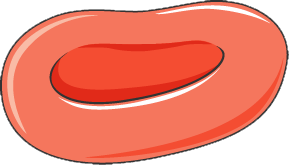
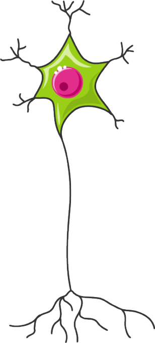
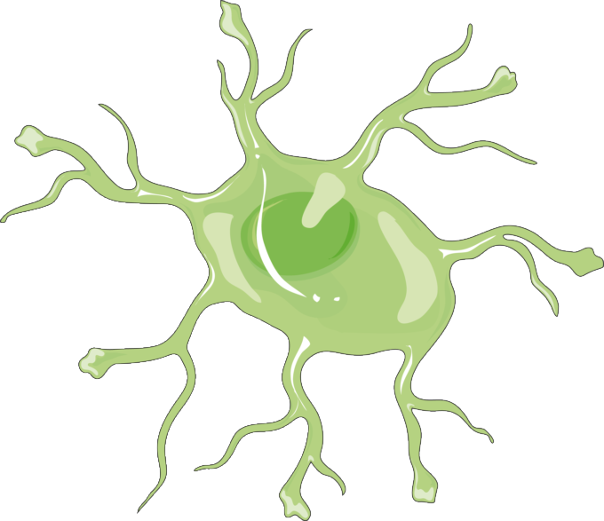

① Reflex-Experimente: Ausprobieren und einordnen
Ihr kennt die Sicherheitshinweise für Versuche schon aus eurer ersten Bio-Doppelstunde in diesem Schuljahr – haltet euch bei den folgenden zwei Kurzversuchen daran (kein Werfen, das Auge wird nicht berührt, vorsichtiger Umgang mit dem Lineal).
Versuch A: Der Lineal-Fangversuch
Ein Partner bzw. eine Partnerin hält ein Lineal senkrecht zwischen deinen leicht geöffneten Fingern (ohne dass es dich berührt) und lässt es ohne Vorwarnung fallen. Du versuchst, es so schnell wie möglich zu fangen.
Musterbeobachtung zur Selbstkontrolle
Das Fangen des Lineals ist kein Reflex, sondern eine sehr schnelle, aber bewusste Reaktion: Das Auge nimmt das fallende Lineal wahr, das Signal wird im Gehirn verarbeitet, erst dann erfolgt die Greifbewegung. Deshalb dauert es messbar länger als ein echter Reflex – genau das nutzt man bei diesem Versuch, um eine Reaktionszeit sichtbar zu machen.
Versuch B: Der Lidschlussreflex
Ein Partner bzw. eine Partnerin bewegt eine Hand ohne Vorwarnung schnell in Richtung deines Gesichts (ohne dich zu berühren!) oder pustet ganz leicht in Richtung deines Auges (nicht direkt hinein). Beobachtet gemeinsam, was mit dem Auge passiert.
Musterbeobachtung zur Selbstkontrolle
Das Auge schließt sich unwillkürlich und blitzschnell – das ist ein echter Reflex (Lidschlussreflex). Die Verarbeitung läuft direkt über das Rückenmark bzw. den Hirnstamm, ohne dass das Gehirn bewusst „mitentscheidet". Du kannst dieses Zukneifen kaum unterdrücken, selbst wenn du weißt, dass keine Gefahr besteht.
Vergleiche beide Versuche: Was ist der entscheidende Unterschied zwischen Versuch A und Versuch B?
Tipp
Überlege: Bei welchem der beiden Versuche ist das Gehirn an der Entscheidung beteiligt – und bei welchem läuft die Verarbeitung woanders ab?
② Vom Reiz zur Erregung – in eigenen Worten
Lest zuerst im Buch (BiBox) die gesamte Seite 254. Macht euch dabei kurze Notizen zu den wichtigsten Fachbegriffen – ihr braucht sie gleich für den Lückentext unten.
Nun ein anderes Beispiel als im Buch: Stellt euch vor, ihr sitzt im Unterricht, als plötzlich der Pausengong ertönt. Füllt die Lücken mit den passenden Fachbegriffen aus eurem Buchtext.
Der Ton des Gongs wird von einer in deinem Ohr wahrgenommen. Diese Zelle wandelt den Reiz in um. Diese Umwandlung eines Reizes in eine wird als Transduktion bezeichnet. Die Erregung wird dann auf die der nächsten Nervenzelle übertragen und im mit dem Axonhügel weiterverarbeitet und verrechnet. Vom Axonhügel läuft die Erregung dann über das weiter. Eine aus Schwann'schen Zellen sorgt dafür, dass die Erregung schneller weitergeleitet wird.
③ Struktur folgt Funktion: Nervenzelle und rotes Blutkörperchen im Vergleich
Ihr habt in Klasse 9 schon verschiedene Zelltypen mikroskopisch verglichen: Der Bau einer Zelle passt zu ihrer Aufgabe. Vergleicht hier eine Nervenzelle mit einem roten Blutkörperchen (Erythrozyt). Ordnet die Merkmale unten dem passenden Zelltyp zu: Merkmal antippen, dann das passende Feld antippen.
Nervenzelle

Grundlage: „Neuron-no labels.png" von Quasar Jarosz, Wikimedia Commons, CC BY-SA 3.0 – von dir bearbeitet.
Rotes Blutkörperchen

Bildquelle: „Erythrocyte" von Servier Medical Art (smart.servier.com/smart_image/smart-erythrocyte/), Lizenz CC BY 4.0.
Zur Einordnung: Ein rotes Blutkörperchen ist mit ca. 7–8 µm winzig. Eine Nervenzelle hat zwar einen ähnlich kleinen Zellkörper (ca. 10–20 µm), kann aber durch ihr Axon insgesamt über einen Meter lang werden – das ist mehr als 100 000-mal so lang wie ein rotes Blutkörperchen!
Denkfrage: Welchen Vorteil hat es für ein rotes Blutkörperchen, keinen Zellkern zu besitzen?
Tipp 1
Ein Zellkern nimmt Platz im Zellinneren ein. Überlege, wofür ein rotes Blutkörperchen diesen Platz stattdessen braucht.
Tipp 2 (Denkanstoß)
Die Hauptaufgabe des roten Blutkörperchens ist der Transport von Sauerstoff mithilfe von Hämoglobin-Molekülen. Je mehr Platz im Zellinneren dafür frei ist, desto mehr davon passt hinein.
④ Nervenzelle und Astrozyt im Vergleich
Im Nervensystem gibt es nicht nur Nervenzellen (Neuronen), sondern auch unterstützende Zellen, die sogenannten Gliazellen. Eine wichtige Gliazelle ist der Astrozyt. Lest die beiden Kurzinfos und ordnet dann die Aussagen zu: Aussage antippen, dann das passende Feld antippen.
Kurzinfo: Nervenzelle (Neuron)
Eine Nervenzelle besteht aus Dendriten, Zellkörper und Axon. Sie ist darauf spezialisiert, elektrische Signale aufzunehmen, über das Axon weiterzuleiten und an Synapsen an die nächste Zelle zu übertragen.
Kurzinfo: Astrozyt
Ein Astrozyt ist eine sternförmige Gliazelle mit vielen Fortsätzen. Mit einem Teil seiner Fortsätze steht er in Kontakt zu Nervenzellen, mit einem anderen Teil zu Blutgefäßen. So kann er Nervenzellen mit Nährstoffen versorgen und das chemische Milieu im Gehirn regulieren. Elektrische Impulse leitet ein Astrozyt selbst nicht über weite Strecken weiter.
Nervenzelle

Bildquelle: „Neuron – grün" von Servier Medical Art (smart.servier.com/smart_image/neuron-green/), Lizenz CC BY 4.0.
Astrozyt

Bildquelle: „Astrocyte" von Servier Medical Art (smart.servier.com/smart_image/astrocyte/), Lizenz CC BY 4.0.
Zur Einordnung: Ein Astrozyt ist mit seinen Fortsätzen ca. 40–60 µm groß. Der Zellkörper einer Nervenzelle allein ist ähnlich klein, durch ihr Axon kann eine Nervenzelle insgesamt aber über einen Meter lang werden – deutlich mehr als jeder Astrozyt.
Denkfrage: Warum ist es sinnvoll, dass ausgerechnet Astrozyten gleichzeitig Kontakt zu Nervenzellen und zu Blutgefäßen haben?
Tipp 1
Überlege, was Nervenzellen zum Arbeiten ständig brauchen – und woher das kommen könnte.
Tipp 2 (Denkanstoß)
Nervenzellen benötigen ständig Sauerstoff und Nährstoffe wie Glucose, haben selbst aber keinen direkten Zugang zu den Blutgefäßen. Eine Zelle, die zu beidem gleichzeitig Kontakt hat, kann hier vermitteln.
⑤ Zusammenfassung & Ausblick
Tippe eine Karte an, um sie umzudrehen.
Zum Nachdenken: Nervenzellen berühren sich nicht direkt – zwischen ihnen liegt ein winziger Spalt. Wie, glaubst du, kommt die Erregung trotzdem von einer Zelle zur nächsten?
Diese Frage klären wir gemeinsam in der nächsten Doppelstunde.